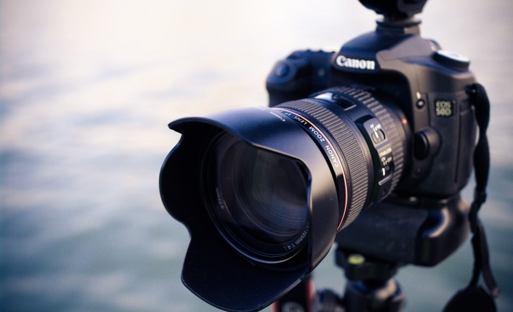

Câmera

Câmeras profissionais são projetadas para capturar imagens de alta qualidade, com sensores avançados e lentes intercambiáveis.
Elas permitem ajustes manuais de foco, exposição e outros parâmetros, proporcionando maior controle criativo ao fotógrafo.
No dia a dia de trabalho, são fundamentais para fotógrafos, cinegrafistas e criadores de conteúdo que necessitam de imagens nítidas e detalhadas.
Um modelo popular é a Câmera Fotográfica Digital Profissional A6x G Zoom, conhecida por sua versatilidade e desempenho em diversas condições de luz.
Compra